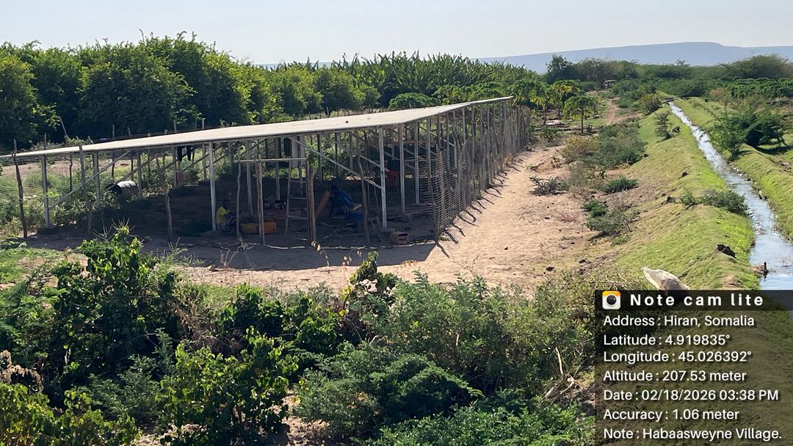
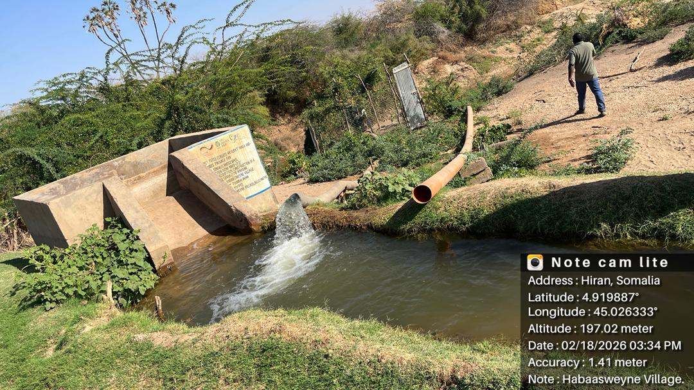
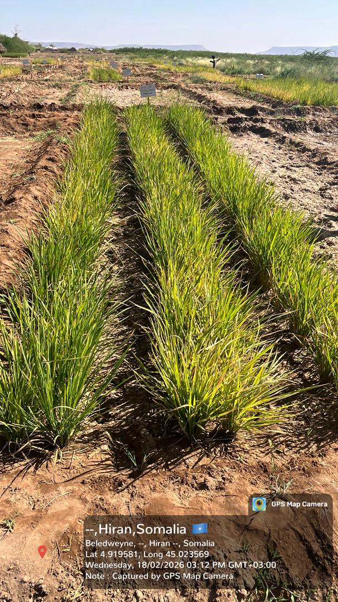

Peninsula Insights Consulting Brand Identity
Our corporate emblem: Empowering Change, Driving Success. The intertwined blue and green geometries represent water, land, resilience, and evidence-driven development across Somalia and beyond.
Documenting on-the-ground interventions: solar pumping infrastructure, concrete canal headworks, experimental rice crop trials, and agronomic monitoring across Somalia.
Empowering Change, Driving Success • Research • Strategy • Resilience • Programme Quality
Our corporate emblem: Empowering Change, Driving Success. The intertwined blue and green geometries represent water, land, resilience, and evidence-driven development across Somalia and beyond.

Ground-mounted solar photovoltaic array with protective mesh enclosure, delivering continuous zero-emission energy to high-volume irrigation pumps. By replacing expensive diesel generators, this system delivers an economical, reliable water supply directly into agricultural canals for smallholder farmers.

On-site technical review assessing canal water flow velocity, embankment stability, and pump discharge pressure. Engineered with reinforced concrete headworks and erosion-resistant embankments to prevent siltation, regulate seasonal flood waters, and deliver measured irrigation downstream.

Field trials evaluating high-performance cereal and rice varieties grown under regulated furrow and basin irrigation. Demonstrates the viability of diversifying staples beyond traditional sorghum and maize, dramatically improving household food security and agricultural resilience.

GPS-tagged field monitoring and data logging of crop emergence and vegetative health in irrigated demonstration plots. Rigorous data collection provides empirical evidence for agricultural extension workers and community farmer associations.